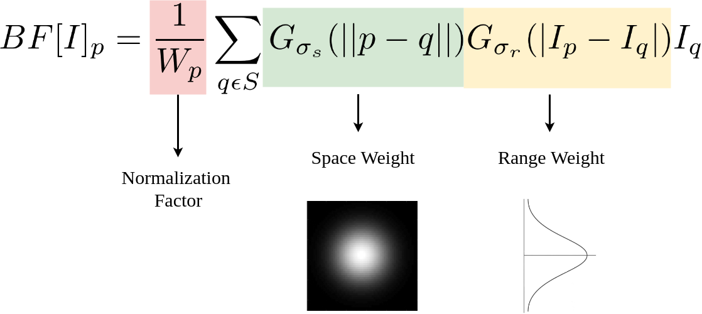
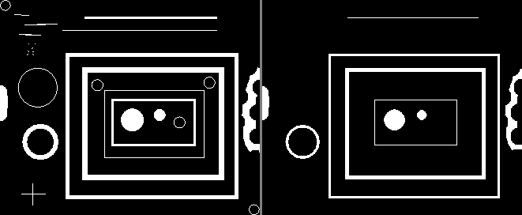

Welcome To Pixelpit!
PixelPit is a webpage designed to learn and understand some of various components of Digital Image Processing in one place.
This website has been made solely for educational purposes as a part of a group project and we do not claim to own any
rights to the educational material we have used to develop it.
Web is the most ubiquitous open computing platform and now with HTML5 standards implemented in every browser,
web applications are able to render images and videos using the image and video tags respectively and access
each pixel of an image or a video frame via the canvas API.
With abundance of available multimedia content, web developers are in need of a wide array of
image and vision processing algorithms in JavaScript to build innovative applications.
For this website, we have used the javascript version of OpenCV called OpenCV.js .
OpenCV.js is a JavaScript binding for selected subset of OpenCV functions for the web platform.
It allows emerging web applications with multimedia processing to benefit from the wide variety of
vision functions available in OpenCV.
Because OpenCV.js is able to run directly inside browser, the OpenCV.js web pages are intuitive and interactive.
Enjoy Learning!
How does this work?
An Image is a 2-dimensional signal of a function f(x,y) where the values of the function represent
the amplitude or intensity of the image.
In general, an image represented by a function f(x,y) is divided into X rows and Y columns.
Thus the co-ordinates range from {x=0,1,2,...,X-1} and {y=0,1,2,...,Y-1}.
At the intersection of these rows and columns, Pixels are present.
Two core components which were used to make this website funtional are:
1. the HTML <canvas> element
2. the Mat class of the OpenCV.js library.
The <canvas> tag in HTML is used to draw graphics on a web page using JavaScript.
It can be used to draw paths, boxes, texts, gradients, and adding images.
It provides HTML a bitmapped surface to work with. A canvas is a rectangle like area on an HTML page. It is specified with canvas element.
By default, the <canvas> element has no border and no content, it is like a container.
We must use a scripting language to draw the graphics. The <canvas>
element allows for dynamic and scriptable rendering of 2D shapes and bitmap images. We use this element in conjunction with
OpenCV.js to display the images we will perform operations on.
To capture an image, we use devices like cameras and scanners.
These devices record numerical values of the image (Ex: pixel values).
OpenCV is a library which processes the digital images,
Therefore we need to store these images for processing.
The Mat class of OpenCV library is used to store the values of an image.
It represents an n-dimensional array and is used to store image data of grayscale or color images,
voxel volumes, vector fields, point clouds, tensors, histograms, etc.
Once this array has been created, and image can then be read and loaded onto it and
it will store pixel values in their respective cells. We can then perform
operations and modifications on this array and use the <canvas> element
to display our results.
You can test this by uploading an image yourself!
Click here to download a sample image to test or
here to choose from many other ones.
After you have chosen an image, click the Choose File button
in the below table, to choose an image to upload and see the output alongside.
You can perform the many image processing operations available on this website in the same manner.
Color Conversion
Color Images
Every pixel in a color image has some color information.
Color images can be modelled as three band monochrome image data, where each band of data
corresponds to a different color.
Each pixel in a color image shall be composed of three channels and they are most
commonly regarded as R, G,and B which represent Red, Green and Blue respectively.
The shade of each pixel would vary based on the intensity of R or G or B.
The RGB color model is based on the cartesian co-ordinate system.
The color subspace of interest is a cube in which RGB vales are at 3 corners;
Cyan, Magenta and Yellow are at other 3 corners; Black is at the origin and white is at the corner
farthest from the origin.
The RGB color model mapped to a cube.
The term Full Color is used to describe a 24 bit (8-bits each for channels R,G & B) RGB image.
The total number of colors in a 24 bit RGB image is (28)3 ≈ 16.8 million colors.
RGB to Grayscale
A Gray-Scale image is a special kind of image which has shaded from black to white, with shades being in between
black and white. The most commonly used format is an *-bit format and it accomodates 256 different shades in it.
Gray-Scale images are known as monochromatic(singular color) images as they contain only grey level
information and no color information. The number of bits usd for each pixel determines the number of different gray levels available.
The full range of colors that the grayscale model can describe
On the one hand, grayscale images convey less information than RGB.
However, they are common in image processing because using a grayscale image requires
less available space and is faster, especially when we deal with complex computations.
Some commonly used methods to convert an image from RGB to grayscale are as follows:
1. Lightness Method
A very simple method is to take the average value of the components with the highest
and lowest values:
We can easily see that this method presents a very serious weakness since one RGB
component is not used. This is definitely a problem because the amount of lightness
that our eye perceives depends on all three basic colors.
2. Average Method
Another method is to take the average value of the three components (red, green, and blue)
as the grayscale value:
Although we now take into account all components, the average method is also
problematic since it assigns the same weight to each component.
Based on research on human vision, we know that our eyes react to
each color in a different manner. Specifically, our eyes are more sensitive to green,
then to red, and finally to blue. Therefore, the weights in the above equation should change.
3. Luminosity Method
The best method is the luminosity method that successfully solves the problems of previous methods.
Based on the aforementioned observations, we should take a weighted average of the components.
The contribution of blue to the final value should decrease, and the contribution of green
should increase. After some experiments and more in-depth analysis, researchers have concluded
in the equation :
Finally, let’s apply these three methods in an image to further illustrate our results.
Below, we can see the results of applying the lightness, the average,
and the luminosity method to convert an RGB image to grayscale:
As expected, the lightness method is the worst since it completely fails to capture the
lightness of the input image. Among the other two, luminosity is the best since the average
method produces a darker grayscale image.
RGB to YCrCb
One important task in image processing applications is the color space conversion.
Real-time images and videos are stored in RGB color space, because it is based on the
sensitivity of color detection cells in the human visual system. In digital image processing
the YCbCr color space is often used in order to take advantage of the lower resolution capability
of the human visual system for color with respect to luminosity. Thus, RGB to YCbCr conversion is
widely used in image and video processing.
One of two primary color spaces used to represent digital component video (the other is RGB).
The difference between YCbCr and RGB is that YCbCr represents color as brightness and two color
difference signals, while RGB represents color as red, green and blue. In YCbCr, the Y is the brightness (luma),
Cb is blue minus luma (B-Y) and Cr is red minus luma (R-Y).
The CbCr plane at constant luma Y′=0.5
Given a digital pixel represented in RGB format, 8 bits per sample,
where 0 and 255 represents the black and white color, respectively,
the YCbCr components can be obtained according to equations (1) to (3):
Equations (1) to (3): RGB to YCbCr conversion
Image and Video consumes a lot of data. One of the reasons is because they are represented
in the RGB format. However, is not worth to store or transmit information in this color space representaion,
once it has a large bandwidth. Thus all the pixels should be converted to YCbCr to accomplish that.
RGB to HSV
HSV (for hue, saturation, value; also known as HSB, for hue, saturation, brightness)
is an alternative representation of the RGB color model, designed in the 1970s by computer graphics
researchers to more closely align with the way human vision perceives color-making attributes.
In this model, colors of each hue are arranged in a radial slice,
around a central axis of neutral colors which ranges from black at the bottom to white at the top.
The HSV representation models how colors appear under light.
HSV Cylinder
Using chroma (range of RGB values) instead of saturation gives an HSV Cone
Hues are the three primary colors (red, blue, and yellow) and the three secondary colors (orange, green, and violet)
that appear in the color wheel or color circle. When you refer to hue, you are referring to pure color,
or the visible spectrum of basic colors that can be seen in a rainbow.
In HSV, hue is a number in the interval (0, 360). A color's hue is its general position on a color wheel,
where red is at 0°, green is at 120°, and blue is at 240°.
For example the RGB code of a yellow/orange color has high red and green components and a low blue component,
with the red level slightly higher than the green. On the color wheel, the angle of this hue is a little less than 60°.
The hue of any neutral color--white, gray, or black--is set at 0°.
Color value refers to the relative lightness or darkness of a color.
We perceive color value based on the quantity of light reflected off of
a surface and absorbed by the human eye. We refer to the intensity of the light that reaches the eye as “luminance.”
Value, in HSV, is the highest value among the three R, G, and B numbers.
This number is divided by 255 to scale it between 0 and 1. In terms of perception,
HSV Value represents how light, bright, or intense a color is.
Value does not distinguish white and pure colors, all of which have V = 1.
Color saturation is the purity and intensity of a color as displayed in an image.
The higher the saturation of a color, the more vivid and intense it is.
The lower a color’s saturation, or chroma, the closer it is to pure gray on the grayscale.
HSV Saturation measures how close a color is to the grayscale. S ranges from 0 to 1.
White, gray, and black all have a saturation level of 0. Brighter, purer colors have a saturation near 1.
The formula for converting from RGB color model to HSV model is as follows:
Adjusting the hue, saturation, and value can greatly impact the overall composition of your images.
Even the smallest adjustment can affect the way your photograph is perceived by the viewer.
Binary
Binary Images are the simplest type of images and can take only 2 values, typically black and white or 0 and 1.
They are referred to as 1-bit images because it takes only 1 binary digit to represent each pixel.
These type of images are used frequently in applications where the informatin required is the general shape or outline.
Binary images often arise in digital image processing as masks or thresholding, and dithering.
Some input/output devices, such as laser printers, fax machines, and bilevel computer displays, can only handle bilevel images.
Binary images are produced from color images by segmentation.
Segmentation is the process of assigning each pixel in the source image to two or more classes.
If there are more than two classes then the usual result is several binary images.
The simplest form of segmentation is probably Otsu's method which assigns pixels to foreground or background based on grayscale intensity.
Another method is the watershed algorithm. Edge detection also often creates a binary image with some pixels assigned to edge pixels,
and is also a first step in further segmentation.
Binary images are often created from gray-scale images via a threshold operation, where every pixel above the threshold value is turned
white(1) and those below it are turned black(0).
Geometric Transformations
Geometric transformation is a fundamental technique used in image processing that involves manipulating the
spatial arrangement of pixels in an image. It is used to modify the geometric properties of an image,
such as its size, shape, position, and orientation.
Affine transformation
Affine transformation is a linear mapping method that preserves points, straight lines, and planes. Sets of parallel lines remain parallel after an affine transformation.
An affine transformation is any transformation that preserves collinearity (i.e., all points lying on a line initially still lie on a line after transformation) and ratios of distances (e.g., the midpoint of a line segment remains the midpoint after transformation). In this sense, affine indicates a special class of projective transformations that do not move any objects from the affine space R^3 to the plane at infinity or conversely. An affine transformation is also called an affinity.
Geometric contraction, expansion, dilation, reflection, rotation, shear, similarity transformations, spiral similarities, and translation are all affine transformations, as are their combinations. In general, an affine transformation is a composition of rotations, translations, dilations, and shears.
While an affine transformation preserves proportions on lines, it does not necessarily preserve angles or lengths. Any triangle can be transformed into any other by an affine transformation, so all triangles are affine and, in this sense, affine is a generalization of congruent and similar.
Scaling transformation
It is used to alter or change the size of objects. The change is done using scaling factors. There are two scaling factors, i.e. Sx in x direction Sy in y-direction. If the original position is x and y. Scaling factors are Sx and Sy then the value of coordinates after scaling will be x1 and y1.
If the picture to be enlarged to twice its original size then Sx = Sy =2. If Sx and Sy are not equal then scaling will occur but it will elongate or distort the picture.
If scaling factors are less than one, then the size of the object will be reduced. If scaling factors are higher than one, then the size of the object will be enlarged.
If Sx and Sy are equal it is also called as Uniform Scaling. If not equal then called as Differential Scaling. If scaling factors with values less than one will move the object closer to coordinate origin, while a value higher than one will move coordinate position farther from origin.
Matrix for Scaling:
Rotate transformation
Image rotation is a common image processing routine with applications in matching, alignment, and other image-based algorithms. The input to an image rotation routine is an image, the rotation angle θ, and a point about which rotation is done.
The rotation operator performs a geometric transform which maps the position Eqn:eqnxy1 of a picture element in an input image onto a position Eqn:eqnxy2 in an output image by rotating it through a user-specified angle Eqn:eqntheta about an origin Eqn:eqnroo. In most implementations, output locations Eqn:eqnxy2 which are outside the boundary of the image are ignored. Rotation is most commonly used to improve the visual appearance of an image, although it can be useful as a preprocessor in applications where directional operators are involved.
To perform the rotation on a plane point with standard coordinates v = (x, y), it should be written as a column vector, and multiplied by the matrix R:
If x and y are the endpoint coordinates of a vector, where x is cosine and y is sine, then the above equations become the trigonometric summation angle formulae. Indeed, a rotation matrix can be seen as the trigonometric summation angle formulae in matrix form.
Thresholding
Thresholding is a technique in OpenCV, which is the assignment of pixel values in relation to the threshold value provided. In thresholding, each pixel value is compared with the threshold value. If the pixel value is smaller than the threshold, it is set to 0, otherwise, it is set to a maximum value (generally 255). Thresholding is a very popular segmentation technique, used for separating an object considered as a foreground from its background. A threshold is a value which has two regions on its either side i.e. below the threshold or above the threshold.
In Computer Vision, this technique of thresholding is done on grayscale images. So initially, the image has to be converted in grayscale color space.
The simplest thresholding methods replace each pixel in an image with a black pixel if the image intensity I(i,j) is less than a fixed value called the threshold T or a white pixel if the pixel intensity is greater than that threshold. In the example image on the right, this results in the dark tree becoming completely black, and the bright snow becoming completely white.
Simple Binary Threshold
The basic Thresholding technique is Binary Thresholding. For every pixel, the same threshold value is applied. If the pixel value is smaller than the threshold, it is set to 0, otherwise, it is set to a maximum value.The different Simple Thresholding Techniques are:
1. cv2.THRESH_BINARY: If pixel intensity is greater than the set threshold, value set to 255, else set to 0 (black).
2. cv2.THRESH_BINARY_INV: Inverted or Opposite case of cv2.THRESH_BINARY.
3. cv.THRESH_TRUNC: If pixel intensity value is greater than threshold, it is truncated to the threshold. The pixel values are set to be the same as the threshold. All other values remain the same.
4. cv.THRESH_TOZERO: Pixel intensity is set to 0, for all the pixels intensity, less than the threshold value.
5. cv.THRESH_TOZERO_INV: Inverted or Opposite case of cv2.THRESH_TOZERO.
Adaptive Thresholding
Adaptive thresholding is the method where the threshold value is calculated for smaller regions and therefore, there will be different threshold values for different regions.
In OpenCV, you can perform Adaptive threshold operation on an image using the method adaptiveThreshold() of the Imgproc class. Following is the syntax of this method.
adaptiveThreshold(src, dst, maxValue, adaptiveMethod, thresholdType, blockSize, C)
Adaptive thresholding typically takes a grayscale or color image as input and, in the simplest implementation, outputs a binary image representing the segmentation. For each pixel in the image, a threshold has to be calculated. If the pixel value is below the threshold it is set to the background value, otherwise it assumes the foreground value.
There are two main approaches to finding the threshold: (i) the Chow and Kaneko approach and (ii) local thresholding. The assumption behind both methods is that smaller image regions are more likely to have approximately uniform illumination, thus being more suitable for thresholding. Chow and Kaneko divide an image into an array of overlapping subimages and then find the optimum threshold for each subimage by investigating its histogram. The threshold for each single pixel is found by interpolating the results of the subimages. The drawback of this method is that it is computational expensive and, therefore, is not appropriate for real-time applications.
Filtering
Image filtering is changing the appearance of an image by altering the colors of the pixels. Increasing the contrast as well as adding a variety of special effects to images are some of the results of applying filters. Filtering is a technique for modifying or enhancing an image. For example, you can filter an image to emphasize certain features or remove other features. Image processing operations implemented with filtering include smoothing, sharpening, and edge enhancement.Filtering is a neighborhood operation, in which the value of any given pixel in the output image is determined by applying some algorithm to the values of the pixels in the neighborhood of the corresponding input pixel. A pixel's neighborhood is some set of pixels, defined by their locations relative to that pixel.
Average Blur
Averaging is the blurring technique where the image is normalized. It replaces the central elements with the calculated average of pixel values under the kernel area.OpenCV provides the cv2.blur() function for averaging applications.
The kernel height and width need to be defined in this function. This is done by convolving an image with a normalized box filter. It simply takes the average of all the pixels under the kernel area and replaces the central element. This is done by the function cv.blur() or cv.boxFilter(). Check the docs for more details about the kernel. We should specify the width and height of the kernel. A 3x3 normalized box filter would look like the below:
Gaussian Blur
Gaussian blur describes blurring an image by a Gaussian function. It is a widely used effect in graphics software, typically to reduce image noise and reduce detail. The visual effect of this blurring technique is a smooth blur resembling that of viewing the image through a translucent screen, distinctly different from the bokeh effect produced by an out-of-focus lens or the shadow of an object under usual illumination. Gaussian smoothing is also used as a pre-processing stage in computer vision algorithms in order to enhance image structures at different scales—see scale-space representation and scale-space implementation.
Mathematically, applying a Gaussian blur to an image is the same as convolving the image with a Gaussian function; this is also known as a two-dimensional Weierstrass transform. By contrast, convolving by a circle (i.e., a circular box blur) would more accurately reproduce the bokeh effect. Since the Fourier transform of a Gaussian is another Gaussian, applying a Gaussian blur has the effect of reducing the image's high-frequency components; a Gaussian blur is thus a low pass filter.
Median Blur
The Median blur operation is similar to the other averaging methods. Here, the central element of the image is replaced by the median of all the pixels in the kernel area. This operation processes the edges while removing the noise.
You can perform this operation on an image using the medianBlur() method of the imgproc class. The median filter run through each element of the signal (in this case the image) and replace each pixel with the median of its neighboring pixels (located in a square neighborhood around the evaluated pixel).
Bilateral Filter
A bilateral filter is a non-linear, edge-preserving, and noise-reducing smoothing filter for images. It replaces the intensity of each pixel with a weighted average of intensity values from nearby pixels. This weight can be based on a Gaussian distribution. Crucially, the weights depend not only on Euclidean distance of pixels, but also on the radiometric differences (e.g., range differences, such as color intensity, depth distance, etc.). This preserves sharp edges.

Here, the normalization factor and the range weight are new terms added to the previous equation. \sigma_s denotes the spatial extent of the kernel, i.e. the size of the neighborhood, and \sigma_r denotes the minimum amplitude of an edge. It ensures that only those pixels with intensity values similar to that of the central pixel are considered for blurring, while sharp intensity changes are maintained. The smaller the value of \sigma_r , the sharper the edge. As \sigma_r tends to infinity, the equation tends to a Gaussian blur.
Morphological Transformations
Morphology is known as the broad set of image processing operations that process images based on shapes. It is also known as a tool used for extracting image components that are useful in the representation and description of region shape.Morphology is a broad set of image processing operations that process images based on shapes. Morphological operations apply a structuring element to an input image, creating an output image of the same size. In a morphological operation, the value of each pixel in the output image is based on a comparison of the corresponding pixel in the input image with its neighbors.
Erosion
Erosion (usually represented by ⊖) is one of two fundamental operations (the other being dilation) in morphological image processing from which all other morphological operations are based. It was originally defined for binary images, later being extended to grayscale images, and subsequently to complete lattices. The erosion operation usually uses a structuring element for probing and reducing the shapes contained in the input image.

The value of the output pixel is the minimum value of all pixels in the neighborhood. In a binary image, a pixel is set to 0 if any of the neighboring pixels have the value 0.Morphological erosion removes floating pixels and thin lines so that only substantive objects remain. Remaining lines appear thinner and shapes appear smaller.
Dilation
The most basic morphological operations are dilation and erosion. Dilation adds pixels to the boundaries of objects in an image, while erosion removes pixels on object boundaries. The number of pixels added or removed from the objects in an image depends on the size and shape of the structuring element used to process the image. In the morphological dilation and erosion operations, the state of any given pixel in the output image is determined by applying a rule to the corresponding pixel and its neighbors in the input image. The rule used to process the pixels defines the operation as a dilation or an erosion. This table lists the rules for both dilation and erosion.
The value of the output pixel is the maximum value of all pixels in the neighborhood. In a binary image, a pixel is set to 1 if any of the neighboring pixels have the value 1.Morphological dilation makes objects more visible and fills in small holes in objects. Lines appear thicker, and filled shapes appear larger.
Opening
Opening is one of the fundamental morphological operations and is commonly used for image preprocessing to remove noise and small unwanted objects while preserving the larger structures in the image. It combines two basic operations: erosion followed by dilation. Opening is performed by applying the erosion operation first, followed by the dilation operation using the same structuring element. The result is a smoother image with reduced noise, removed small objects, and preserved larger structures.
Opening is mathematically represented as follows:
Opening(A) = Dilation(Erosion(A, B), B) where:
1. A is the input binary image.
2. B is the structuring element (kernel).
3. Erosion(A, B) represents the erosion of A using the structuring element B.
4. Dilation(A, B) represents the dilation of A using the structuring element B.
Opening is particularly useful when dealing with images that contain noise or when you want to separate small objects from larger ones. It is a powerful tool in image preprocessing pipelines and plays a vital role in image segmentation and feature extraction tasks.Opening removes small objects from the foreground (usually taken as the bright pixels) of an image, placing them in the background, while closing removes small holes in the foreground, changing small islands of background into foreground. These techniques can also be used to find specific shapes in an image. Opening can be used to find things into which a specific structuring element can fit (edges, corners, ...).Opening is generally used to restore or recover the original image to the maximum possible extent.
Closing
Closing is another fundamental morphological operation in image processing, and it is the dual of opening. Closing is typically used to fill small holes and gaps in the foreground regions while preserving the larger structures in the image. It consists of two basic operations: dilation followed by erosion.Closing is performed by applying the dilation operation first, followed by the erosion operation using the same structuring element. The result is a smoother image with filled holes and gaps in the foreground regions while preserving the larger structures. Closing is mathematically represented as follows:
Closing(A) = Erosion(Dilation(A, B), B)where:
1. A is the input binary image.
2. B is the structuring element (kernel).
3. Dilation(A, B) represents the dilation of A using the structuring element B.
4. Erosion(A, B) represents the erosion of A using the structuring element B.
Closing is particularly useful when dealing with binary images that contain small gaps or holes in the foreground regions, such as those obtained from image thresholding or segmentation. It is commonly used in image preprocessing to prepare images for further analysis, like object detection, feature extraction, and pattern recognition tasks.
Morphological Gradient
The morphological gradient is another important morphological operation used in image processing. It is derived from the difference between the dilation and erosion of an image and is primarily employed to highlight the boundaries or edges of objects in the input image.
Mathematically, the morphological gradient of an image A is given by:
Morphological Gradient(A) = Dilation(A, B) - Erosion(A, B)
where:
1. A is the input image (usually a binary or grayscale image).
2. B is the structuring element (kernel) used in the dilation and erosion operations.
3. Dilation(A, B) represents the dilation of A using the structuring element B.
4. Erosion(A, B) represents the erosion of A using the structuring element B.
By subtracting the result of the erosion from the result of the dilation, we obtain the morphological gradient. This subtraction emphasizes the regions in the image where there is a significant difference in intensity between the dilated and eroded images. These regions usually correspond to the boundaries or edges of objects in the original image.
The morphological gradient is commonly used in image processing for various purposes, including:
1. Edge Detection: The morphological gradient helps in detecting edges and boundaries in binary or grayscale images, which is useful in edge detection tasks.
2. Object Segmentation: It can be used as a pre-processing step for segmenting objects in an image by highlighting object boundaries.
3. Feature Extraction: The morphological gradient can be used to extract features, such as object outlines or contour information, which can be used in pattern recognition and machine learning algorithms.
4. Image Analysis: It finds applications in medical image analysis, fingerprint recognition, industrial inspection, and other areas where object boundaries are crucial for analysis.
Top Hat
In image processing, the top-hat operation is another morphological operation used to enhance or extract specific features in an image. It is particularly useful for highlighting small and bright details, such as small objects or bright regions, that are smaller than the structuring element used in the operation.
The top-hat operation is defined as the difference between the input image and its opening. Mathematically, the top-hat of an image A is given by:
Top-Hat(A) = A - Opening(A)
where:
- A is the input image (usually a binary or grayscale image).
- Opening(A) represents the opening of the image A, which is obtained by applying the opening morphological operation to A.
To perform the top-hat operation, you first compute the opening of the image using an appropriate structuring element (kernel), and then you subtract the result from the original image. The resulting image will highlight the small and bright structures that were removed during the opening process.
Here's a step-by-step explanation of the top-hat operation:
1. Opening:
The opening operation, as explained earlier, is a morphological operation that involves performing erosion followed by dilation on the input image. Opening removes small bright regions and thin structures while preserving the larger structures.
2. Top-Hat:
To compute the top-hat of the image, you subtract the result of the opening operation from the original image. This difference will emphasize the small bright regions that were removed during the opening process. These small bright regions can represent noise or other small-scale features of interest in the image.
The top-hat operation is commonly used in various image processing applications, including:
1. Microscopy and Medical Imaging: It is useful for detecting and enhancing small objects or structures in microscopic or medical images, where tiny details are crucial for analysis.
2. Defect Detection: It can be employed in industrial inspection to highlight and identify small defects or anomalies on surfaces.
3. Text Recognition: In document processing, the top-hat operation can be used to improve text extraction by highlighting small and bright characters against the background.
4. Feature Extraction: The top-hat operation can be part of a feature extraction pipeline, where it helps to capture and emphasize specific details in the image.
Black Hat
In image processing, the black hat operation is another morphological operation used to enhance or extract specific features in an image. It is the dual of the top-hat operation and is particularly useful for highlighting small and dark details, such as small dark regions or structures that are smaller than the structuring element used in the operation.
The black hat operation is defined as the difference between the closing of the input image and the input image itself. Mathematically, the black hat of an image A is given by:
Black Hat(A) = Closing(A) - A
where:
1. A is the input image (usually a binary or grayscale image).
2. Closing(A) represents the closing of the image A, which is obtained by applying the closing morphological operation to A.
To perform the black hat operation, you first compute the closing of the image using an appropriate structuring element (kernel), and then you subtract the original image from the result. The resulting image will highlight the small and dark structures that were removed during the closing process.
Here's a step-by-step explanation of the black hat operation:
1. Closing:
The closing operation, as explained earlier, is a morphological operation that involves performing dilation followed by erosion on the input image. Closing fills small gaps or holes in the foreground regions while preserving the larger structures.
2. Black Hat:
To compute the black hat of the image, you subtract the original image from the result of the closing operation. This difference will emphasize the small and dark regions or structures that were removed during the closing process. These small dark regions can represent noise or other small-scale features of interest in the image.
The black hat operation is commonly used in various image processing applications, including:
1. Defect Detection: It is useful for detecting and enhancing small dark defects or anomalies in industrial inspection tasks.
2. Background Subtraction: In computer vision applications, the black hat operation can be used for background subtraction to isolate and highlight moving objects or regions of interest.
3. Blood Vessel Detection: In medical imaging, the black hat operation can be employed to enhance blood vessels or small structures in angiography or retinal images.
4. Text Detection: It can be used for text extraction and localization, where small and dark characters need to be emphasized against the background.
Structuring Element
In image processing and mathematical morphology, a structuring element, also known as a kernel, is a small matrix or a shape used to probe, analyze, or manipulate an image. Structuring elements are essential components of various morphological operations, including dilation, erosion, opening, closing, top-hat, and black hat, which are used for image processing tasks such as noise removal, feature extraction, and object detection.
A structuring element defines the neighborhood around each pixel in the image during morphological operations. It can be of various shapes, such as a square, rectangle, circle, or custom-designed shape. The choice of the structuring element depends on the specific task and the characteristics of the objects or features to be detected or manipulated.
The size and shape of the structuring element determine the extent of influence that a pixel will have on its neighbors during the morphological operation. A larger structuring element covers a wider region around each pixel, resulting in more extensive changes in the output image.
Here are some commonly used structuring elements:
1. Square Structuring Element: A square-shaped matrix with equal dimensions along both rows and columns. It is widely used for many morphological operations.
2. Rectangle Structuring Element: Similar to the square, but it allows for different dimensions along the rows and columns, allowing more flexibility in the morphological operation.
3. Circular Structuring Element: A disk-shaped element defined by its radius. It is useful for operations that need a circular probing region, such as smoothing or feature detection.
4. Cross Structuring Element: Consists of a horizontal line and a vertical line, forming a cross shape. It is often used for detecting linear features in the image.
5. Custom Structuring Element: Users can define their own structuring elements according to specific requirements or characteristics of the objects in the image.
During a morphological operation, the center of the structuring element is placed on each pixel in the image, and the pixels within the overlapping region of the structuring element are analyzed based on the specific operation (e.g., dilation or erosion). The result of the operation is then stored in the corresponding pixel of the output image.
Image Gradients
Sobel Derivative
The Sobel operator is a commonly used edge detection filter in image processing and computer vision. It is used to compute the gradient of an image intensity function, which highlights edges and boundaries in the image. The operator uses two separate 3x3 convolution kernels to calculate the derivative approximation in the horizontal and vertical directions.
Vertical Mask: Also known as X-direction kernal.When we apply this mask on the image it prominent vertical edges. It simply works like as first order derivate and calculates the difference of pixel intensities in a edge region.
As the center column is of zero so it does not include the original values of an image but rather it calculates the difference of right and left pixel values around that edge. Also the center values of both the first and third column is 2 and -2 respectively.
This give more weight age to the pixel values around the edge region. This increase the edge intensity and it become enhanced comparatively to the original image.
Horizontal Mask: Also known as Y-direction kernal.This mask will prominent the horizontal edges in an image. It also works on the principle of above mask and calculates difference among the pixel intensities of a particular edge. As the center row of mask is consist of zeros so it does not include the original values of edge in the image but rather it calculate the difference of above and below pixel intensities of the particular edge. Thus increasing the sudden change of intensities and making the edge more visible.
Scharr derivative
The Scharr operator is an edge detection filter used in image processing and computer vision. It is commonly used to find the edges of objects or boundaries in digital images. The operator is designed to be more sensitive to edges than the traditional Sobel operator, especially for diagonal edges.
The Scharr operator approximates the gradient of the image intensity function with respect to both the X and Y directions. It consists of two separate kernels (one for each direction) that are convolved with the image to compute the gradient magnitude and direction.
The X-direction and Y-direction kernel is:
The Scharr derivative works by convolving an image with two separate kernels (one for the X-direction and one for the Y-direction). These kernels are specifically designed to approximate the partial derivatives of the image intensity function with respect to the X and Y axes. The X-direction kernel emphasizes horizontal edges, while the Y-direction kernel emphasizes vertical edges. By convolving the image with these kernels, the Scharr operator calculates the gradients in both directions, representing the rate of change of image intensity. The gradient magnitude is then computed from these gradients, indicating the strength of the edges, and the gradient direction reveals the orientation of the edges. Overall, the Scharr derivative is a powerful edge detection technique, especially useful for detecting edges in images with diagonal features.
Laplachian Derivative
Laplacian Operator is also a derivative operator which is used to find edges in an image. The major difference between Laplacian and other operators like Prewitt, Sobel, Robinson and Kirsch is that these all are first order derivative masks but Laplacian is a second order derivative mask. In this mask we have two further classifications one is Positive Laplacian Operator and other is Negative Laplacian Operator.
Another difference between Laplacian and other operators is that unlike other operators Laplacian didn’t take out edges in any particular direction but it take out edges in following classification.
1. Inward Edges
2. Outward Edges
Laplacian is a derivative operator; its uses highlight gray level discontinuities in an image and try to deemphasize regions with slowly varying gray levels. This operation in result produces such images which have grayish edge lines and other discontinuities on a dark background. This produces inward and outward edges in an image.
The important thing is how to apply these filters onto image. Remember we can’t apply both the positive and negative Laplacian operator on the same image. we have to apply just one but the thing to remember is that if we apply positive Laplacian operator on the image then we subtract the resultant image from the original image to get the sharpened image. Similarly if we apply negative Laplacian operator then we have to add the resultant image onto original image to get the sharpened image.
Canny Edge Detection
Canny edge detection uses linear filtering with a Gaussian kernel to smooth noise and then computes the edge strength and direction for each pixel in the smoothed image. Candidate edge pixels are identified as the pixels that survive a thinning process called non-maximal suppression. In this process, the edge strength of each candidate edge pixel is set to zero if its edge strength is not larger than the edge strength of the two adjacent pixels in the gradient direction. Thresholding is then done on the thinned edge magnitude image using hysteresis. In hysteresis, two edge strength thresholds are used. All candidate edge pixels below the lower threshold are labeled as non-edges and all pixels above the low threshold that can be connected to any pixel above the high threshold through a chain of edge pixels are labeled as edge pixels.
The Canny edge detector requires the user to input three parameters. The first is sigma, the standard deviation of the Gaussian filter specified in pixels. The second parameter low is the low threshold which is specified as a fraction of a computed high threshold. The third parameter high is the high threshold to use in the hysteresis and is specified as a percentage point in the distribution of gradient magnitude values for the candidate edge pixels.
Histogram
A histogram is basically used to represent data provided in a form of some groups.It is accurate method for the graphical representation of numerical data distribution.It is a type of bar plot where X-axis represents the bin ranges while Y-axis gives information about frequency.
Plotting
To create a histogram the first step is to create bin of the ranges, then distribute the whole range of the values into a series of intervals, and count the values which fall into each of the intervals.Bins are clearly identified as consecutive, non-overlapping intervals of variables.The matplotlib.pyplot.hist() function is used to compute and create histogram of x.
Matplotlib provides a range of different methods to customize histogram.
matplotlib.pyplot.hist() function itself provides many attributes with the help of which we can modify a histogram.The hist() function provide a patches object which gives access to the properties of the created objects, using this we can modify the plot according to our will.
Equalisation
Histogram equalization is a technique used in image processing to enhance the contrast of an image by redistributing the intensity values of pixels. The goal of histogram equalization is to achieve a uniform or nearly uniform histogram, which spreads the intensity values across the entire range.
Here's how histogram equalization works:
1. Histogram Calculation: First, the histogram of the input image is computed. The histogram represents the frequency of occurrence of each intensity value in the image.
2. Cumulative Distribution Function (CDF)**: The cumulative distribution function is calculated using the histogram. The CDF represents the cumulative probability of each intensity value occurring in the image.
3. Histogram Equalization Transformation: The CDF is then normalized to span the entire range of possible intensity values. This normalized CDF is used as a lookup table to transform each pixel's intensity value in the original image.
4. Pixel Intensity Transformation: For each pixel in the image, its original intensity value is replaced with the corresponding value from the normalized CDF. This process effectively redistributes the pixel intensities and stretches the intensity range.
The result of histogram equalization is an image with improved contrast and a more uniform distribution of pixel intensities. Dark and bright areas of the image become more distinct, and details in both shadow and highlight regions become more visible.
Histogram equalization is a useful technique for improving the visual appearance of images and enhancing the performance of image processing algorithms that rely on well-distributed pixel intensities. However, it may not always produce desirable results, especially when the original image already has a well-balanced histogram or contains significant local variations in intensity. In such cases, adaptive histogram equalization techniques are used to enhance specific regions of an image separately.
Fourier Transform
Fourier
Fourier transformation is a fundamental mathematical operation used in signal processing, image processing, and various other fields to analyze and represent signals or functions in terms of their frequency components. It was introduced by the French mathematician Joseph Fourier.
The Fourier transform converts a signal or function from its original domain (typically time or space) into the frequency domain. It decomposes the signal into a sum of sinusoidal waves with different frequencies, amplitudes, and phases. This transformation allows us to analyze the signal in terms of its frequency content, providing valuable insights into its periodicity and underlying components.
The Fourier transform of a continuous signal f(t) is given by the following equation:
F(ω) = ∫[f(t) * e^(-jωt)] dt
where F(ω) is the complex-valued function representing the signal in the frequency domain, ω is the angular frequency, j is the imaginary unit (√(-1)), and the integral is taken over the entire range of t.
In practice, the discrete version of the Fourier transform, known as the Discrete Fourier Transform (DFT), is more commonly used to process digital signals or discrete data. The Fast Fourier Transform (FFT) is an efficient algorithm for computing the DFT, which significantly reduces the computational complexity.
Fourier transformation has numerous applications, such as:
1. Signal Analysis: Revealing the frequency components of a signal, identifying dominant frequencies, and filtering out unwanted noise.
2. Image Processing: Transforming images into the frequency domain to perform operations like filtering, compression, and feature extraction.
3. Audio Processing: Analyzing audio signals, including music and speech, to extract features, perform spectral analysis, and implement audio effects.
4. Communications: In modulation and demodulation of signals for transmitting information over various communication channels.
5. Quantum Mechanics: Essential for understanding wave functions and wave-particle duality in quantum mechanics.
The Fourier transformation is a powerful tool that enables us to analyze and manipulate signals in a way that is often more convenient in the frequency domain than in the time or spatial domain.
Hough Transform
The Hough Transform is a method that is used in image processing to detect any shape, if that shape can be represented in mathematical form. It can detect the shape even if it is broken or distorted a little bit.
Hough Line Transform
The Hough line transform is a feature extraction technique used in image processing and computer vision to detect straight lines in an image. It was proposed by Paul Hough in 1962. The basic idea behind the Hough line transform is to represent lines in an image as points in a parameter space known as the Hough space. Each point in the Hough space corresponds to a potential line in the original image. The transform works by converting the pixel coordinates of edge points (e.g., obtained through edge detection algorithms like Canny) into lines in the Hough space.
The Hough line transform follows these steps:
1. Edge Detection: Detect edges in the image using an edge detection algorithm like the Canny edge detector.
2. Hough Accumulation: For each edge point, calculate the possible lines that pass through that point in the image space. Convert these lines into points in the Hough space using the line's parameters (typically represented as slope and intercept or distance and angle).
3. Voting: Increment the accumulator cells in the Hough space corresponding to the points obtained in the previous step. This step accumulates votes for potential lines in the Hough space.
4. Thresholding: Set a threshold in the Hough space to identify significant peaks, which correspond to lines in the image space.
5. Line Reconstruction: Retrieve the parameters of the lines corresponding to the significant peaks in the Hough space. These parameters represent the detected lines in the original image.
The Hough line transform is robust to noise and can detect lines even if they are broken or not perfectly straight. However, it requires a significant amount of computational resources, especially for large images, due to the need to search the parameter space.
The Hough line transform is widely used in various computer vision applications, including lane detection in autonomous vehicles, line detection in industrial inspection, and geometrical shape detection in image analysis. Additionally, it serves as a basis for more advanced Hough transforms used for detecting other shapes, such as circles or ellipses.
Probabilistic Hough Line Transform
The Probabilistic Hough Line Transform is a variation of the traditional Hough Line Transform used for detecting straight lines in an image.Compared to the traditional Hough Transform, which involves scanning the entire parameter space to find all possible lines, the Probabilistic Hough Line Transform is computationally more efficient. Instead of considering every edge point in the image, it randomly selects a subset of edge points and only accumulates votes for the lines formed by this subset.
The steps of the Probabilistic Hough Line Transform are as follows:
1. Edge Detection: Detect edges in the image using an edge detection algorithm like the Canny edge detector.
2. Line Extraction: Randomly select a subset of edge points from the detected edges.
3. Voting: For each selected edge point, calculate the possible lines that pass through that point in the image space and increment the accumulator cells in the Hough space corresponding to these lines.
4. Thresholding: Set a threshold in the Hough space to identify significant peaks that represent potential lines.
5. Line Reconstruction: For each significant peak, retrieve the parameters of the lines corresponding to those peaks. These parameters represent the detected lines in the original image.
The Probabilistic Hough Line Transform is particularly useful when there are a large number of edge points in the image. By randomly selecting a subset of edge points, it reduces the computational burden, making it more efficient for real-time applications. However, due to the random sampling, it may not be as accurate as the traditional Hough Transform, especially when dealing with long and nearly parallel lines.
The Probabilistic Hough Line Transform is commonly used in scenarios where computational efficiency is crucial, such as real-time computer vision tasks, robotics, and interactive applications that require fast line detection in images or video streams.
Hough Circle Transform
The Hough Circle Transform is a feature extraction technique used in image processing and computer vision to detect circles in an image. It is an extension of the traditional Hough Line Transform and was proposed by Richard Duda and Peter Hart in 1972.The Hough Circle Transform works by representing circles in an image as points in a three-dimensional parameter space. Each point in the parameter space corresponds to a potential circle in the original image. The transform accumulates votes for potential circles by examining the edge points in the image.
Here's how the Hough Circle Transform works:
1. Edge Detection: Detect edges in the image using an edge detection algorithm like the Canny edge detector.
2. Circle Parameterization: For each edge point, consider all possible circles that could pass through that point. The parameters that define a circle are the coordinates of its center (x, y) and its radius (r).
3. Voting: For each edge point, vote for the corresponding circle in the parameter space. Increment the accumulator cells in the three-dimensional Hough space corresponding to the center (x, y) and radius (r) of the circle.
4. Thresholding: Set a threshold in the Hough space to identify significant peaks, which correspond to potential circles in the original image.
5. Circle Reconstruction: Retrieve the parameters (center and radius) of the circles corresponding to the significant peaks in the Hough space. These parameters represent the detected circles in the original image.
The Hough Circle Transform is effective in detecting circles of different sizes and can handle circles that are partially occluded or incomplete. However, it requires a substantial amount of computational resources due to the three-dimensional parameter space.
The Hough Circle Transform is widely used in various computer vision applications, including object detection, iris detection, and medical image analysis, where circles or circular patterns need to be identified and analyzed. It is a valuable tool for circle detection and is a basis for other Hough transforms used to detect more complex shapes, such as ellipses or lines with specific orientations.
Segmentation
Segmentation in image processing refers to the process of dividing an image into meaningful and semantically coherent regions or segments. The goal of image segmentation is to simplify the representation of an image, making it easier to analyze and extract useful information from specific regions of interest.
There are various techniques for image segmentation, and the choice of method depends on the characteristics of the image and the specific application. Some common segmentation techniques include:
1. Thresholding: This method involves selecting a threshold value and classifying each pixel in the image as foreground or background based on whether its intensity is above or below the threshold. It is useful for segmenting objects with distinct intensity levels.
2. Edge-Based Segmentation: This approach detects edges or boundaries in an image by identifying significant changes in pixel intensity. The edges outline the objects or regions in the image, making it easy to extract them.
3. Region-Growing: Region-growing methods start with seed points and expand regions by adding neighboring pixels that meet certain similarity criteria. This process continues until the entire region is covered or a stopping criterion is met.
4. Clustering: Clustering techniques group pixels based on their similarities in color, intensity, texture, or other features. This can be achieved using methods like K-means clustering or mean-shift clustering.
5. Watershed Segmentatio: The watershed algorithm treats pixel intensities as topographical features and simulates flooding to separate regions based on intensity valleys.
6. Graph-Based Segmentation: This method represents an image as a graph, where pixels are nodes and edges represent the relationships between pixels. Graph-based algorithms identify segment boundaries based on graph properties.
Image segmentation is a critical step in various computer vision and image analysis tasks, such as object recognition, image compression, image editing, medical image analysis, and autonomous vehicle navigation.
Since image segmentation can be challenging and depends on the nature of the image and the desired output, researchers continue to develop and refine advanced segmentation algorithms to tackle various segmentation problems. Deep learning techniques, especially convolutional neural networks (CNNs), have shown remarkable success in segmenting complex and diverse images.


{kind=link}


{kind=link}